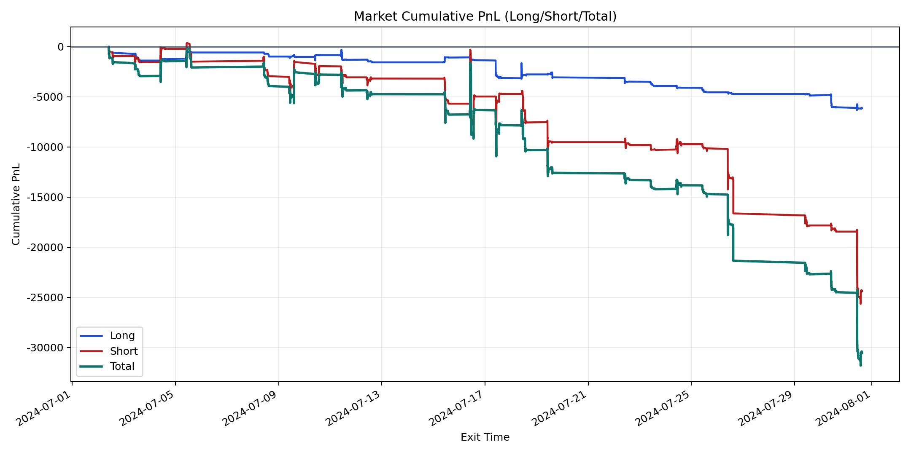
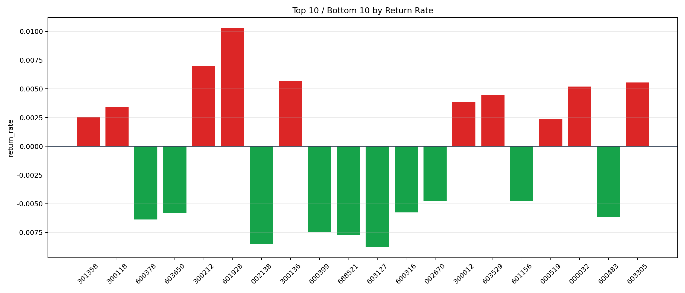

| repo_root | /home/haoranyou/data/output/alpha0.4_1w_5s_3ticks_index_filter/index_weights_500 |
|---|---|
| period_months | 1 |
| period_label | 2024-07-02_to_2024-07-31 |
| start_time | 2024-07-02 09:50:32 |
| end_time | 2024-07-31 14:42:57 |
| n_trades | 3379 |
| n_symbols | 100 |
| total_pnl | -30530.368200000074 |
| long_total_pnl | -6137.542750000019 |
| short_total_pnl | -24392.82545000006 |
| total_entry_notional | 30468355.0 |
| long_entry_notional | 5736937.0 |
| short_entry_notional | 24731418.0 |
| total_return_rate | -0.0010020353314118887 |
| long_return_rate | -0.0010698292050270064 |
| short_return_rate | -0.0009863092140531553 |
| top_symbols_by_return | ["601928", "300212", "300136", "603305", "000032", "603529", "300012", "300118", "301358", "000519"] |
| bottom_symbols_by_return | ["603127", "002138", "688521", "600399", "600378", "600483", "603650", "600316", "002670", "601156"] |

